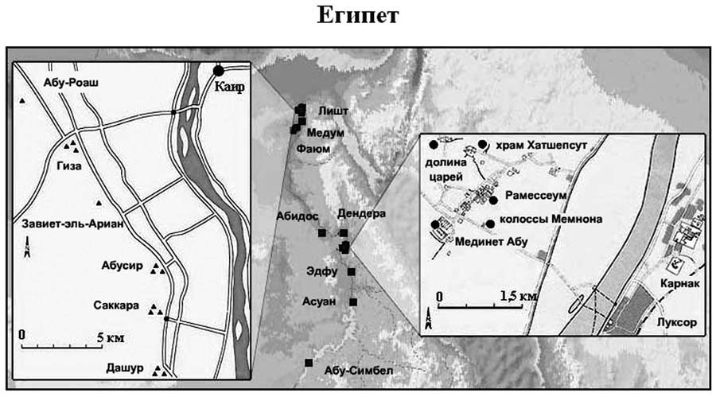
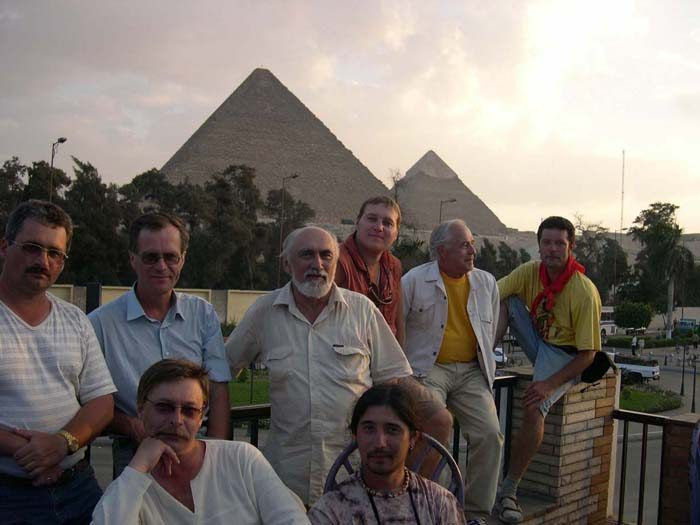
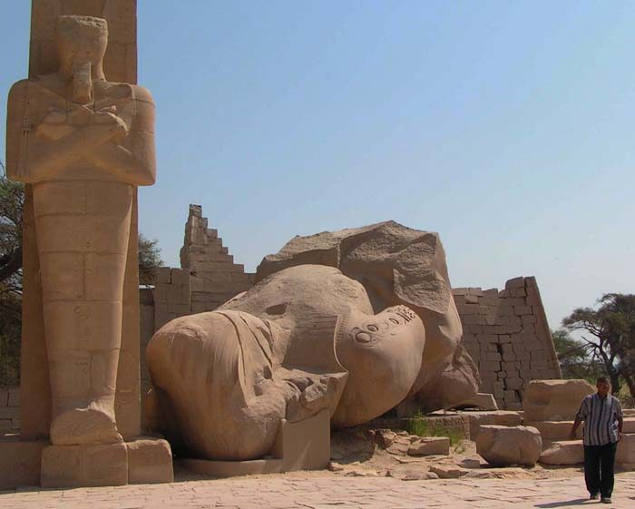

Страна, о древней истории которой известно все и ничего.
«Мы, греки, в действительности просто дети по сравнению с этим народом, чьи традиции в десять раз древнее. Египет записывает и сохраняет навечно мудрость древних времен. Стены их храмов покрыты надписями, и у жрецов всегда перед глазами их божественное наследие... Поколения продолжают передавать последующим поколениям все, что пришло с незапамятных времен, когда боги правили землей» (Платон о египтянах).
It is impossible not to start with a brief summary of the modern view of Egyptology on ancient history. Firstly, not all of the readers can quickly recall it, at least in the same school presentation. And secondly, in the future we will have to figure out how the real facts correspond to a particular theory, including the officially accepted one.

Плато Гиза в Египте ежегодно посещают миллионы туристов. Подавляющее большинство из них приезжает сюда лишь затем, чтобы разнообразить свой отпуск, отдохнуть от морского пляжа, купить пару-тройку сувенирчиков и, конечно же, сделать несколько фотографий всемирно известных пирамид и себя на их фоне. Если уж приехал в Египет, то разве можно устоять от такого соблазна?.. Даже если приходится для этого проехать по пустыне на автобусе несколько часов (и это – только в одну сторону, поскольку основные туристические центры находятся на весьма удаленном расстоянии от столицы Египта – Каира, на западной окраине которого и находятся, собственно, знаменитые пирамиды).
Обычно сжатый по максимуму туристический график не дает особой возможности посетителям плато расслабиться, – ведь гидам и сопровождающим обязательно надо успеть завезти группу на «фабрику по производству папирусов», где туристам предложат по десятикратной цене «исключительно натуральный товар, который можно купить здесь и только здесь; у всех других – исключительно подделки». А далее еще на какую-нибудь «фабрику по производству парфюмерных масел»… И не важно, что эти «фабрики» абсолютно ничем не отличаются от обычных магазинов; что каким-то образом в Каире оказываются свои «фабрики» для русских, для итальянцев, для немцев и т.д.; и что вся довольно бесхитростная «восточная хитрость» гидов и сопровождающих видна невооруженным взглядом, – их вполне можно понять, ведь они тоже имеют с этого свою небольшую долю, а кушать хочется всем…
Но если образуется у туриста хоть пара свободных минут и возможность спокойно осмотреться самостоятельно, то пирамиды Гизы не упускают своего шанса. Не прощают они праздного любопытства. Кого-то завораживают своей предельно лаконичной красотой и масштабностью, а кого-то именно этим же подавляют. Кто-то вдруг испытывает ничем необъяснимый восторг или, наоборот, невесть откуда взявшуюся тревогу, а кто-то погружается в размышления о смысле жизни и бренности бытия. Мало кто остается глух к той энергии, которая (как будто – ?!.) исходит от пирамид и пронизывает все вокруг.
И чаще всего возникает один и тот же вопрос: кто же их построил и как?..
Хотя буквально каждый знаком с официальной версией, изложенной в школьном учебнике; хотя гид в любую секунду готов эту версию повторить; и хотя в каждой продаваемой здесь книжке вновь и вновь приводится все та же самая версия – у многих остается очень сильное сомнение в том, что пирамиды могли быть построены примитивными методами, и что вообще строителями были египтяне. Ну, не вяжется это никак с тем, что видишь своими собственными глазами!.. Хоть ты что!..
Вот и возникают и продолжают жить самые разные и самые, казалось бы, невероятные версии. Кто-то считает строителями пирамид жителей легендарной Атлантиды или их потомков. Кто-то – пришельцев из других миров или с далеких планет.
Академическая наука гневно отвергает или надменно игнорирует эти «глупые» (на ее взгляд) теории. Но вот, что интересно: факты-то оказываются не на стороне прописанной в школьных учебниках официальной версии! Они гораздо ближе именно к альтернативным теориям!.. И прав-то оказывается тот самый «обычный турист», усомнившийся в «прописных истинах», а не целая армия египтологов, готовая в любую минуту встать на защиту версии, этой же армией взращенной и возведенной в ранг официальной догмы.
Вы верите в Атлантиду?
Здесь автора могут спросить: «Вы что?!. Верите в инопланетян или Атлантиду?»
Такой вопрос и именно в такой форме приходилось и приходится слышать довольно часто…
Но… В самой формулировке вопроса – привычной и, увы, весьма популярной – кроется принципиальнейшая ошибка! Вера хороша только для религии. Познание, особенно научное познание, базируется не на вере, а на прямой ее противоположности – на сомнении. Сомнении в самых, казалось бы, «давно установленных и незыблемых истинах». Открыть что-то новое можно, только усомнившись в старом.
Более того. Объективно разобраться в чем-то можно только тогда, когда выходишь на позицию стороннего наблюдателя. Как бы встаешь над ситуацией и осматриваешь ее под разными точками зрения, отодвинув собственную веру или личные установки и предпочтения на задний план.
Конечно, у меня тоже есть свои предпочтения. И их я бы сформулировал так: на текущий момент я считаю версию инопланетного происхождения строителей пирамид (или предков этих строителей) наиболее вероятной из всех имеющихся ныне разных версий, каждая из которых имеет также право на существование и на освещение не только в средствах массовой информации, но и в научной литературе, куда ныне открыт доступ только представителям ортодоксальных взглядов…
Но давайте сначала разберемся хотя бы в том, что реально было. А уж кто именно стоял (а может быть и стоит) за этим – египтяне, атланты или инопланетяне – будем разбираться потом.
И разбираться не на основе какой-то веры или доктрины (хоть официальной, хоть альтернативной), а на базе фактов, логики и обычного здравого смысла.
Но где искать ответы на возникающие вопросы?..
Те, кто помнит еще так называемые «времена застоя» конца 70-х – начала 80-х уже прошлого столетия, знает, что крупицы информации можно найти и в книгах, прошедших самую тщательную цензуру. Даже в передовицах газеты «Правда» тех времен многое можно было прочесть между строк.
Однако те самые крупицы просто тонут в объеме информации, которую приходится пропускать через себя, если пытаться найти ответы в академических изданиях. У неподготовленного читателя возникает в голове самая настоящая каша из дат, имен и названий. Тут уж не до поиска мельчайших частиц истины…
Другой вариант – искать готовые ответы в «альтернативных» изданиях, рассматривающих версии, игнорируемые официальной наукой. Варианты таких ответов есть. И книг таких с каждым годом все больше. Но хочется иметь не просто готовый ответ, а понимать – на базе каких именно данных строится та или иная версия. И какая из них ближе к реальным фактам. Ведь только факты могут служить критерием истинности конкретной теории.
Увы. Если встать на позиции стороннего наблюдателя, а не слепого приверженца какой-то выбранной версии, придется признать, что доказательная база подавляющего большинства альтернативных гипотез, мягко говоря, оставляет желать лучшего. Очень нередко используются сомнительные данные (иногда даже противоречащие здравому смыслу), а иногда и явные выдумки. Сталкиваешься и с откровенным манипулированием фактами в угоду теоретическим измышлениям. Всего хватает…
Более того. С определенного момента понимаешь, что начинаешь ходить по кругу. Вразумительного ответа все нет, а новая информация кончилась. Авторы очень многих (чуть ли не большинства!) книг, выходящих последнее время, не утруждают себя сбором данных и их проверкой, предпочитая лишь повторять в очередной раз старые издания, в лучшем случае приводя цитаты и ссылки на них, а то и просто пересказывая своими словами и дополняя собственными домыслами.
Парадоксально, но, как выясняется, наиболее ярые приверженцы как официальной, так и альтернативных версий, с готовностью хватаются за перо (или садятся за компьютер) и пишут целые трактаты, ни разу так и не побывав в тех местах, древнюю историю которых они пытаются описывать!..
Оказывается, и до сих пор весьма актуально крылатое выражение Жванецкого: хватит ругать Голливуд, не видя его фильмов…
Общие выводы, на которых сошлись участники экспедиции

-
Цивилизация Древнего Египта периода фараонов строилась на руинах гораздо более древней очень высокоразвитой цивилизации, уровень которой даже превосходил наше современное общество. Фараоны лишь «присваивали» себе то, что осталось от их величественных предшественников, местами что-то достраивая, что-то реконструируя или реставрируя. Но методы этой «достройки» (как и ее результаты) – явно примитивные и не идут ни в какое сравнение с более древними сооружениями. И фактов, свидетельствующих об этом так много, что весь Египет ими буквально кишит.
-
Доступ к основной массе таких фактов закрыт. Туристические маршруты проложены таким образом, чтобы максимально обойти места, где наличие этой древней цивилизации становится просто очевидным. Хотя порой достаточно сделать лишь несколько десятков шагов в сторону. Места эти объявлены зоной археологических раскопок (хотя никаких реальных следов раскопок в подавляющем большинстве случаев там нет), и под этим предлогом запрещены видео и даже фотосъемки. На все требуется специальное личное (!!!) разрешение Захи Хавасса – главы египетского Комитета по Древностям. (Да здравствует местная коррупция, многократно превышающая нашу и пока позволяющая эти запреты обходить. Хотя и не бесплатно…)
-
Режим запрета постепенно и заметно усиливается. Многие объекты, доступные для любого туриста буквально пару лет назад, ныне закрыты. Даже Каирский Музей открыт только для осмотра – там уже запрещены не только видео, но и фотосъемки, а на входе установлен режим тщательного досмотра!
-
Очень широкими масштабами ведется так называемая «реставрация», по сути представляющая собой реконструкцию (т.е. изменение!). Под лозунгом заботы о туристах осуществляется мощнейшая переделка исторических памятников. Новодел на каждом шагу, и даже особо не скрывается. За ним порой уже трудно определить истинный вид объектов до «реставрации».
- Все это производит впечатление весьма четко скоординированной деятельности, направленной на сокрытие доступа к информации о древней цивилизации. И как не претит идея каких-либо «заговоров», но буквально все участники экспедиции постоянно к этой идее возвращались.
***

Но если отвлечься от сугубо материальных интересов инициаторов подобного мероприятия (а такие интересы очевидны, поскольку за любой доступ уже и сейчас взимается плата, зачастую весьма немаленькая), то можно обнаружить и вполне определенную идеологическую его подоплеку. Ведь говорить о пагубности реализации этой инициативы Комитета по Древностям для исследователей, придерживающихся альтернативных версий, и не приходится!.. Им-то доступа тогда вообще не видать… Похоже, совсем шаткие стали позиции у египтологии, раз ей приходится прибегать даже к таким сомнительным действиям. Видимо, официальная версия истории трещит по всем швам и рискует рухнуть в одночасье, если доступ к информации о реальных (а не только разрекламированных) находках получат исследователи, в этой версии сомневающиеся… С грустью оценивая перспективы для, если так можно выразиться, независимых исследователей (то есть тех, кто не скован необходимостью заботиться о своем карьерном росте и жертвовать объективностью ради этого) в свете последних тенденций, видимых невооруженным взглядом, автор очень рад, что ему удалось побывать в Египте именно сейчас, а не через десяток-другой лет. И не просто посетить страну в качестве обычного туриста, а принять участие в экспедициях с весьма обширной программой.
***